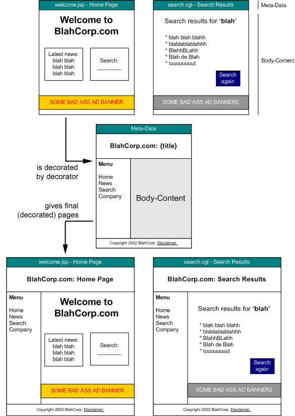

- SiteMesh is a web-page layout and decoration framework and web- application integration framework to aid in
creating sites consisting of pages for which a consistent look/feel, navigation and layout scheme is required.
- SiteMesh intercepts requests to any static or dynamically generated HTML page requested through the
web-server, processes the content and then merges it with one or more decorators to build the final result.
- SiteMesh can also be used compose large pages of smaller pages and layouts.
- SiteMesh is fast. Really fast.
- SiteMesh can be used in Java based web-applications, or applied to content as an offline job.
- SiteMesh is extensible.
- Get started...
